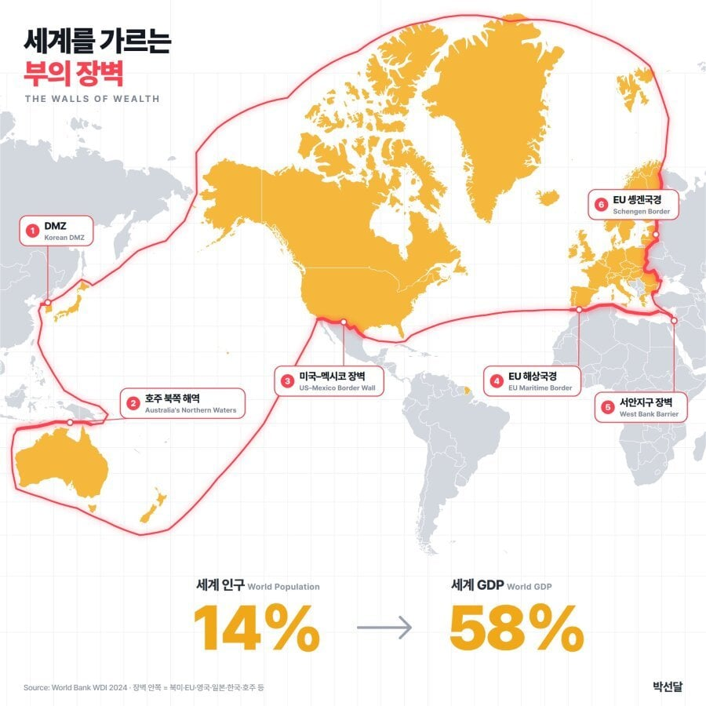

남미에 노란색 지역 하나 있는디?

남미에 노란색 지역 하나 있는디?
70%-80아님? 58% 면 너무 적은데
한일 유럽 북미 포함인데 너무 적은데
중국이 세계2위, 인도가 세계 6위, 러시아가 세계 9위, 브라질이 세계 10위. 기타 인구 많은 개도국들도 경제규모 무시할 수 없고 반대로 중동부국들도 무시할 수 없음.
무시한게
아니라서 30 이나 잡아준건데
큰건 브릭스 4곳. 저기 합만 해도 1/4정도 되는데, 기타도 무시하지 못할만큼 생각보다 꽤 나온단 얘기. 물론 중국이 하드캐리해서 저게 가능한 부분.
나도 이런 느낌 받았는데
이게 1인당 GDP가 아니라 총 GDP라 우리 직관적인 인식이랑 약간 차이가 있는듯
인도, 중국 등 인구가 워낙 깡패라
중국이 없응게
그리스 ㅅㅂㅋㅋ
대만 싱가폴 홍콩이 빠져있는디?
생각보다 비중이 낮네? 중국 대만 인도가 빠져서 그렇겠네
중국이 전 세계 명목 gdp에 16,5~17.5%라고 하던데, 그걸 15억 인구로 쪼개니 진짜로 별것도 안되는 거였구나... 폐쇄되고 한정된 국가에서 인구가 개쳐많으니 안에서 박터지게 서로 수탈해대는거고...
대만 왜 빠짐
ㄹㅇ 우리 성장 못했음 대한해협이 저 경계였겠지?
남아메리카에 하나 칠해진건 왜 안침?
저거는 프랑스라 그럼
와 첨 알았다 기이나라고 프랑스령이구나.
그냥 하와이같은 명목상 영토가 아니라 EU 정식 영토네;
아이슬란드랑 그린란드는 뭔데 들어감?
갑자기 싱크로나이즈돼서 대만홍콩싱가폴 ㅈㄴ 찾네 ㅋㅋㅋ
저 라인 밖이라고 잘 사는 나라가 없다곤 안했는데 ㅋㅋㅋ
70~80인줄 알았는데 의외로 낮네
북미 유럽 호주에 한국 일본까지 넣고도 58%밖에 안되는게 오히려 놀랍네 중국+중동이 엄청 파이가 큰듯
생각보다 너무 적은데? 싶다가 중국 인도가 빠져있구나
부의 장벽이라기 보다는 블루팀(이었던 것) 기준으로 나눈듯
58%에 인구 14%이니 인구1%당 부는 4%이상
나머지 86%가 42%를 가진거고(인구 1%당 0.5% 이하)
중국이 인구1%당 1%(미국6%, 유럽4%, 한국 2.66%)
인구를 빼면 과반 약간 넘는건데 인구 비례를 적용하면 평균으로는 8배차이...
미국이 몇% 가지고 있음? 얘네 물타기하는거 같은데
우리 나름 잘사는거였군
존나 잘사는거지
아직도 물동이로 물 떠오는곳 많음
나 평범하게 살아가는 대한민국 사람인데 대기업은 아녀도 중견 다니고 그냥 결혼하고 한국에서 사는것만으로도 전세계에서 상위권 삶이 아닌가 싶어서 너무 스트레스 안 받고 살기로 했음
놀랍게도 땅크기도 58프로 같은데?
메르카토르 도법이라 그래
실제론 전체의 20% 정도의 면적이야
서안지구 장벽 ㅅㅂ
남미 저거 프랑스령 기아나인가?
중국의 위엄인가ㄷㄷ